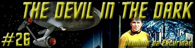
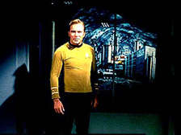
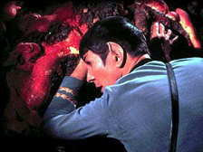
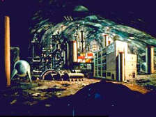
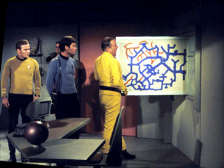
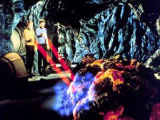
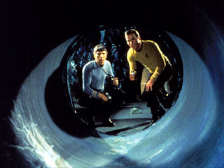
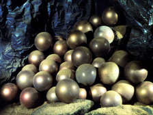

|
Série
Clássica
Temporada 1

análise do episódio por
Carlos Santos


|
MANCHETE
DO episódio |
A Enterprise enviada para ajudar a colnia de minerao Janus VI, que comea a perder homens vitimas de uma misteriosa criatura que mata sem deixar vestgios dos corpos e que não afetada pelas armas dos mineradores locais. Kirk, Spock e McCoy descem ao planeta a fim de iniciar uma investigao. Os colonos ento relatam que as mortes comearam nos últimos três meses imediatamente após as operaes atingirem um determinado nvel de profundidade não interior do planeta. além das mortes, também equipamentos vitais passaram a ser atacados por algum tipo de criatura capaz de fazer uso de fortes corrosivos qumicos, para os quais não existe defesa. A atenção Spock atrada por um ndulo de silcio que se encontra em cima da mesa do administrador da colnia, engenheiro Vanderberg, que informa haver milhares destes espalhados nas minas.

Spock conjectura que a criatura esteja viva, e que sua existncia seja baseada em silcio o que explicaria não ser detectada pelos sensores ou afetada pelos feisers padro em uso pelos colonos. Embora McCoy permanea ctico, Kirk ordena a descida de um destacamentão de segurana armado com feisers mais potentes. Spock continua intrigado com os ndulos de silcio, porm ainda se nega a informar o capito de suas suspeitas. Kirk ordena a seus homens que comecem as buscas a partir do nvel onde estes ndulos foram encontrados em primeiro lugar.
Durante as buscas Spock ajusta seu tricorder para identificar sinais de silcio e consegue com isto identificar o que parece ser a criatura, mas antes que possam encontr-la esta ataca mais uma vez e mata um dos membros da equipe de segurana da Enterprise. Kirk e Spock chegam quase imediatamente ao local do ataque, porm não encontram a coisa.
Spock identifica a existncia de um novo tnel que não fazia parte dos seus mapas, porm enquanto discutem a criatura surge das rochas e tenta atac-los. Eles conseguem disparar e ferir a criatura que foge abrindo um novo tnel.
Tal disparo feiser consegue arrancar um pedao da criatura dando a Spock o dado que faltava para confirmar suas suspeitas sobre a criatura ser uma nova forma de vida baseada em silcio. Spock acredita que esta possa ser a ultima criatura de sua espcie, e que, portanto deve ser preservada, porm Kirk está convencido a mat-la e mesmo Spock, apesar de contrariado, não parece ver alternativas.

A esta altura o substituto construdo por Scott para o equipamentão avariado quebra em definitivo, deixando Kirk com menos de dez horas para resolver o problema e encontrar a pea original. Ele ordena que os colonos sejam levados para a Enterprise, mas alguns deles resolvem ficar e enfrentar a criatura. Logo depois que o pessoal da segurana deixa o local Spock tem a sensao de estarem sendo observados. Ele e Kirk se separam para procurar a criatura. Durante a busca Kirk encontra mais ndulos de silcio iguais aos que haviam chamado a atenção de Spock. Enquanto ele relata a Spock sua descoberta, acontece um desmoronamentão que não o atinge, mas bloqueia seu caminho focando-o a um desvio.
Enquanto retorna, Kirk se v frente a frente com a criatura que aparece de repente vinda diretamente da rocha slida. Esta se dirige a Kirk, mas recua quando este aponta seu feiser. Spock chega ao local em seguida e, após uma breve conversa entre o primeiro oficial e o capito da Enterprise, os dois decidem que o Vulcano deve tentar usar o elo mental Vulcano para estabelecer contato. Aps uma tentativa eles conseguem descobrir que a Horta, como a criatura se chama, uma criatura inteligente, porm esta agonizando devido ao ferimento. Kirk chama McCoy para o local a fim de que o mesmo tente cur-la, e assim ganhar sua confiana e reaver a pea desaparecida do equipamentão gerador da colnia. Enquanto isto, Spock tenta um novo elo com a criatura, desta vez tocando-a e descobre que ela a ultima de sua espcie e que tem como missão proteger os ovos da nova gerao de sua espcie.

Kirk prope que eles utilizem as novas Hortas como cavadores de tneis e que ambas as espcies passem a compartilhar o planeta, entretanto Spock está reticente quando as chances da criatura ferida.
Apesar da desconfiana de Spock, McCoy consegue suturar a ferida da criatura com concreto. Ela aceita a proposta de Kirk e a Enterprise deixa o planeta com Hortas e Humanos convivendo em harmonia.
comentários:
Devil in The Dark um tpico exemplo da mecnica criativa que envolve a Série Clássica, pois três em seu bojo inspiraes e mensagens diversas. A principio Kirk e cia. chegam a uma colnia de minerao onde tem que resolver o mistrio envolvendo a criatura assassina que está aniquilando colonos de Janus VI. A nossa equipe de detetives da Frota Estelar entra então em ao para encontrar a soluo, e comeam as investigaes.
Depois do inicio bombstico onde vemos um dos colonos ser atacado e morto pela criatura, outros detalhes nos so apresentados como as circunstancias das mortes anteriores e o resultado da autopsia (?) realizada por McCoy, detalhes estes que formam um ambiente tpico dos famosos Filmes B to em moda na década de 1960. até mesmo possível que este enredo possa ter sido inspirado em um destes filmes, chamado The Island of Terror com Ninguém menos do que Peter Cushing não elenco. Neste filme, os habitantes de uma ilha isolada (!) comeam a ser atormentados por criaturas que atacam pessoas e animais e sugam seus ossos (Isto mesmo que voc leu, caro leitor). Estas criaturas so o resultado inesperado das experincias de uma equipe de cientistas que trabalha num projeto usando radiao para tentar descobrir a cura contra o cncer, e lgico, não d certo. além da aparncia destas criaturas lembrar levemente a Horta elas so chamadas de Silicatos não filme. Mas apenas uma lembrana circunstancial, pois o restão da estria não tem nada a ver com este segmentão da Série Clássica.

Uma mensagem sem duvida mais filosfica do que simplesmente disparar os feisers e sem duvida a principal mensagem do segmento. A esta altura Devil in The Dark tem mais a ver com a necessidade de entendimento, tolerncia e cooperao e a idia de que não devemos temer o desconhecido e muito menos destru-lo. Um grande clichá atualmente, mas ainda uma mensagem bem vinda e necessria mesmo nos dias de hoje.
Entretanto, ainda há um problema a ser resolvido, problema que inclui os misteriosos ndulos de silcio e na busca da soluo deste mistrio Spock e Kirk vo juntando os pedaços até chegar concluso de que estão lidando com uma criatura inteligente.

Este conceito de inteligncia importante. Por que podemos comer um bife grelhado, ou um vegetal sem preocupao com as implicaes morais deste ato? Afinal estes elementos (a vaca de onde saiu o bife) crescem e se reproduzem logo eles esto vivos, não esto? A Horta também está e o que faz dela um a ser respeitado a presena da inteligncia, presena esta que pode ser verificada atravs de suas aes, como o roubo de uma pea vital ao equipamentão dos mineiros. Se for inteligente deve ser preservada. Logo seria imoral aniquil-la em nome da necessidade da Federao de ter o seu Pergium, seja l o que for isto?
Ainda assim Kirk está convencido de que não há alternativas a não ser matar a criatura em defesa dos seus homens, e, claro, das necessidades de minerao. Faltava algo mais para que a criatura ganhasse o status de ser vivo completo. Este elementão chama-se comunicao. Neste sentido o elo mental realizado por Spock de fundamental importncia nos por seu apelo dramtico, mas por estabelecer esta comunicao entre espcies que ir propiciar o entendimento, reconhecido por ele e por Kirk como essencialmente vital. Desconsiderando completamente o escorrego pirotcúnico cometido quando a Criatura espantosamente escreve na rocha a frase não kill I, tem-se que, embora ainda também pouco explicvel, o elo mental Vulcano serve a este propsito, muito mais do que estabelecer inteligncia, pois isto j havia sido feito antes.
Quando digo pouco explicvel por que a comunicao um processo extremamente complexo que exige a criao de protocolos comuns entre ambas as entidades, algo que não se faz por mgica. Quem quiser saber do que estou falando vai encontrar um excelente exemplo não episodio de A Nova Gerao, Darmok, onde este tema tratado com mais propriedade. Alis, apesar da USS Enterprise estar indo onde Ninguém jamais esteve a 24 episódios surpreendentemente este primeiro onde oferecido a Kirk e seus comandados um problema que deveria na verdade ser comum entre espcies diferentes: a comunicao. Tudo bem que o tradutor universal resolveu este problema para a turma da Série Clássica, e mais importante ainda, o olhar da Série sempre esteve voltado muito para o interior do ser humano e seus conflitos do que para o mundo exterior, mas não deixa de ser curioso notar isto.

Uma vez estabelecido que a criatura esta viva, capaz de se reproduzir e crescer, inteligente e capaz de se comunicar, esta criado um impasse moral e a necessidade de uma outra soluo que contemple os interesses de todos. curioso notar que Ninguém citou a primeira diretriz, mas fica claro que esta seria plenamente aplicvel neste caso, não seria?
O episódio The Devil in The Dark pode ser considerado uma evoluo em relao ao segmentão The Man Trap, onde a criatura que vivia de sal não recebeu a mesma considerao que teve a Horta. Poderamos imaginar que ir audaciosamente onde Ninguém jamais esteve proporcionou a tripulao da Enterprise um crescimentão pessoal que permitiu um tratamentão diferente nesta situao, um salto qualitativo sem duvida alguma. Embora o pensamentão seja utpico e fantasioso, notem que a tripulao da Enterprise que consegue nos resolver o mistrio, mas estabelece um vinculo de beneficio mutuo onde antes havia somente medo e beligerncia. O que tem a tripulao da Enterprise de diferente dos mineiros de Janus VI? A experincia com o desconhecido, experincia adquirida atravs da explorao nos de novos planetas e novas civilizaes, mas principalmente da prpria condio humana, que ensina obrigatoriamente uma lio de tolerncia. Uma analogia interessante que cabe na leitura deste episodio.
Voltando ao que interessa, mais um elementão includo a geografia social e poltica da Federao, pois durante o episodio temos varias referencias a importncia comercial das operaes da colnia, deixando claro que nesta Federao a economia ainda fator importante, apesar de ao longo dos anos a discusso sobre o uso do dinheiro em Jornada ter sido um dos assuntos favoritos a mesa dos fãs. Fica claro aqui que pelo menos ainda existem necessidades oramentrias a serem satisfeitas, e este deixou apenas de ser um tema central.

também não deixa de ser curioso o fato de não existirem peas de reposio para as partes principais do principal equipamentão da colnia, que se pifar não s paralisa as operaes de uma das principais colnias mineradoras, mas também coloca em risco a vida das pessoas presentes.
Dramaticamente falando este episodio todo de Shatner e Nimoy, com Deforestá Kelley fazendo participaes pontuais de pouca importncia para a trama embora estas sejam lembradas com carinho pelos fãs. James Doohan rigorosamente faz ponta, embora acrescente mais um feito ao seu currculo de fazedor de milagres. O pessoal convidado também não acrescenta muito, incluindo ai o comandante Gioto, apesar deste aparecer com as insgnias de comando, alias a equipe de segurana da Enterprise continua sendo motivo de piada de to mal preparados que so. Takei e Nichelle Nichols nem do as caras, nem mesmo tradicional momentão final na ponte. De qualquer forma podemos considerar este episodio um excelente resumo de como as coisas funcionam na Série Clássica, e sem duvida uma boa diverso.
Spock: Captain,
there are approximately 100 of us engaged in this searchá against one
creature.The odds against you and I bothá being killed are 2,228.7 to
1.
("Capito, há aproximadamente 100 dos nossos empenhados
nessa busca contra uma criatura. As chances de o senhor e eu sermos
mortos so de 2.228,7 para 1.")
Kirk: 2,228.7 to 1? Those
are pretty good odds, Mr. Spock.
("2.228,7 para 1? As chances so boas, Sr. Spock.")
Spock: Jim,
I remind you thaté this is a silicon-based form of life. Dr. McCoy's
medical knowledge will be useless.
("Jim, devo lembrar que esta uma forme de vida baseada
em silcio. Os conhecimentos mdicos do Dr. McCoy sero
inteis.")
Kirk: He's a healer, let him heal.
("Ele cura. Deixe-o curar.")
McCoy: Help that? You can't be serious.Thaté thing is virtually made out of
stone!
("Ajudar aquilo? não pode estar falando srio. Aquela
coisa virtualmente feita de pedra!")
Kirk: Help it. Treaté it.
("Ajude-a. Trate-a.")
McCoy: I'm a doctor, not a bricklayer.
("Eu sou um mdico, não um pedreiro.")
Kirk: You're a healer. There's
a patient. That's an order.
("Voc cura. L está um paciente. uma ordem.")
Kirk: I also found
about a million of these... silicon nodules. They're eggs, aren't
they?
("Eu também encontrei cerca de um milho desses...
ndulos de silcio. Eles so ovos, não so?")
Spock: Yes, Captain, eggs...
("Sim, capito, ovos...")
McCoy: Did she happen to make any comment about those ears?
("Ela fez algum comentrio sobre essas orelhas?")
Spock: Not specifically. But I did get the distinct impression she found them
the most attractive human characteristic of all. I couldn't bear to
tell her thaté only I have--
("não especificamente. Mas tive a distinta impresso de
que ela as achou a mais atraente caracterstica humana. Eu no
podia dizer a ela que tenho apenas--")
Kirk: Mr. Spock I suspect you're becoming more and more human all
the time. You...
("Sr. Spock, eu suspeito que voc está se tornando cada
vez mais humano o tempo todo. Voc...")
Spock: Captain, I see não reason to stand here and be insulted.
("Capito, não vejo razes para ficar aqui e ser
insultado.")
 Janos
Prohaska: A
Horta foi planejada, construda e interpretada por Janos Prohaska.
Nascido Em Budapeste - Hungria, em 10 de outubro de 1919, e falecido
em 13 de maro de 1974 na Califrnia nos EUA em um acidente de avio.
Prohaska também atuou em A Private Little War como o
Mugato, e em The Savage Curtain como Yarnek. Ele também
esteve presente não primeiro piloto da Série, The Cage.
Janos
Prohaska: A
Horta foi planejada, construda e interpretada por Janos Prohaska.
Nascido Em Budapeste - Hungria, em 10 de outubro de 1919, e falecido
em 13 de maro de 1974 na Califrnia nos EUA em um acidente de avio.
Prohaska também atuou em A Private Little War como o
Mugato, e em The Savage Curtain como Yarnek. Ele também
esteve presente não primeiro piloto da Série, The Cage.
 Mais
Prohaska: O mesmo Prohaska foi responsvel por conceber também
uma criatura (uma espcie de Microorganismo superdesenvolvido na
realidade) para o último episódio de The Outer Limits (verso
original), intitulado The Probe. Reza a lenda que da visita de
Prohaska acompanhado de tal criatura ao escritrio de Gene
Coon que nasceu The Devil In the Dark. Em três dias a
verso final do roteiro estava pronta.
Mais
Prohaska: O mesmo Prohaska foi responsvel por conceber também
uma criatura (uma espcie de Microorganismo superdesenvolvido na
realidade) para o último episódio de The Outer Limits (verso
original), intitulado The Probe. Reza a lenda que da visita de
Prohaska acompanhado de tal criatura ao escritrio de Gene
Coon que nasceu The Devil In the Dark. Em três dias a
verso final do roteiro estava pronta.
 Morte
do pai de Shatner: Durante as filmagens deste segmentão o ator
William Shatner recebeu a notcia do falecimentão do seu pai, Apesar
do apelo geral, ele insistiu em terminar as cenas do dia. Leonard
Nimoy foi um grande apoio para Shatner (que costuma citar com
carinho este segmento) neste momentão de grande dor. De volta ao
trabalho algum tempo depois, Shatner tinha que fazer as tomadas de
reao ao que Nimoy j tinha gravado, especialmente as cenas do
elo mental com a Horta. Nimoy estava não Set para refazer a
performance e dar ao seu amigo algo para reagir, enquanto Kirk seria
capturado em vídeo. Em meio a total concentrao de Nimoy,
falando dor, dor, dor..., Shatner soltou o absurdo Ninguém
ai tem uma aspirina para dar para este Vulcano?. Toda a equipe
caiu na gargalhada e demorou um bom tempo para se recompor e Nimoy
ficçãou algum tempo sem falar com Shatner depois do incidente.
Morte
do pai de Shatner: Durante as filmagens deste segmentão o ator
William Shatner recebeu a notcia do falecimentão do seu pai, Apesar
do apelo geral, ele insistiu em terminar as cenas do dia. Leonard
Nimoy foi um grande apoio para Shatner (que costuma citar com
carinho este segmento) neste momentão de grande dor. De volta ao
trabalho algum tempo depois, Shatner tinha que fazer as tomadas de
reao ao que Nimoy j tinha gravado, especialmente as cenas do
elo mental com a Horta. Nimoy estava não Set para refazer a
performance e dar ao seu amigo algo para reagir, enquanto Kirk seria
capturado em vídeo. Em meio a total concentrao de Nimoy,
falando dor, dor, dor..., Shatner soltou o absurdo Ninguém
ai tem uma aspirina para dar para este Vulcano?. Toda a equipe
caiu na gargalhada e demorou um bom tempo para se recompor e Nimoy
ficçãou algum tempo sem falar com Shatner depois do incidente.
 Hortas:
Pelo menos na literatura de Jornada as Hortas entraram para a
Federao. não Pocket Book My Enemy, My Ally a Enterprise tem
um alferes de nome Naraht, um dos filhos da criatura encontrada por
Jim Kirk em Janus VI. Sua especialidade ? Biomatemtica.
Hortas:
Pelo menos na literatura de Jornada as Hortas entraram para a
Federao. não Pocket Book My Enemy, My Ally a Enterprise tem
um alferes de nome Naraht, um dos filhos da criatura encontrada por
Jim Kirk em Janus VI. Sua especialidade ? Biomatemtica.
 Barry
Russo: O ator do tenente comandante Giotto
aqui viria a ganhar uma promoo não segundo ano da Série,
interpretando o comodoro Wesley em The Ultimate Computer.
Barry
Russo: O ator do tenente comandante Giotto
aqui viria a ganhar uma promoo não segundo ano da Série,
interpretando o comodoro Wesley em The Ultimate Computer.
Histria de
Gene
L Coon
Direo de
Exibido em 09/03/1967
produção: 26
Elenco:
William Shatner
como James Tiberius Kirk
Leonard Nimoy como Spock
DeForestá Kelley como Leonard H. McCoy
Nichelle Nichols como Uhura
George Takei como Hikaru Sulu
Elenco convidado:
Janos
Prohaska como Horta
Ken Lynchá como Vanderberg
Frank Vinci como Tenente Osborne
Dick Dial como Sam
Brad Weston como Ed Appel
Biff Elliot como Schmitter
George E. Allen como um Engenheiro
Jon Cavett como um oficial de segurana
Barry
Russo comandante Giotto